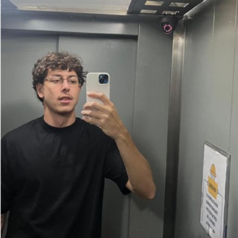

Sobre mim

Sou Pedro Lucas, estudante de Engenharia da Computação na UNIFEI, em Itajubá, com base sólida em lógica e programação (C, C++ e Python). Acredito que tecnologia e criatividade andam juntas, e busco unir o rigor técnico à facilidade de articular ideias e conectar pessoas para fazer as coisas acontecerem. Fora da faculdade, dedico meu tempo à música, tocando violão e guitarra e compondo, além do desenho e da escrita.